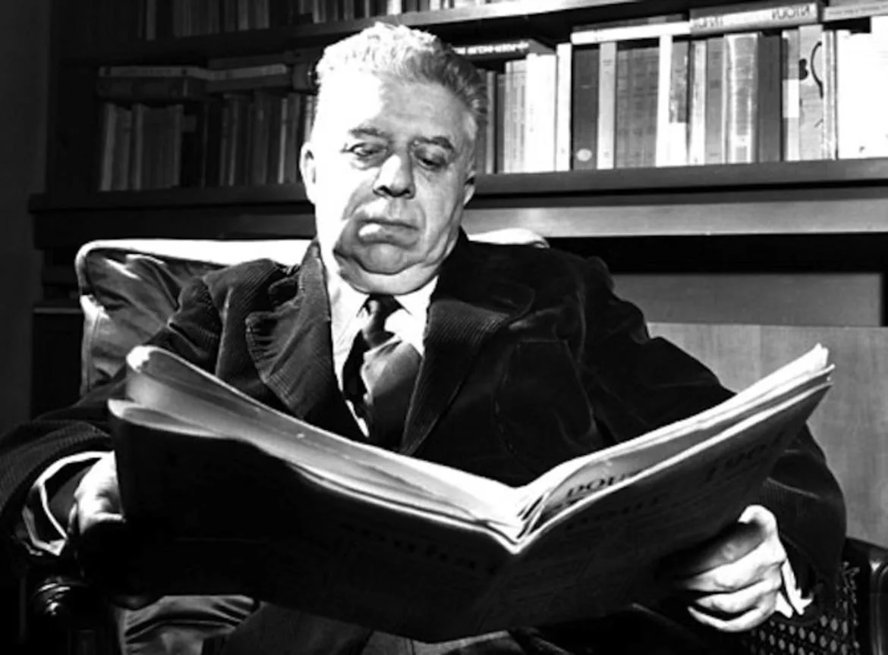
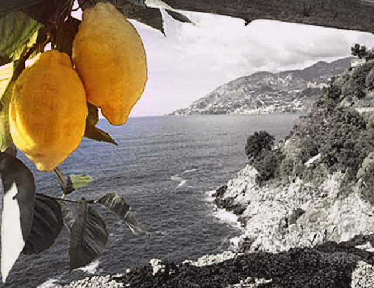
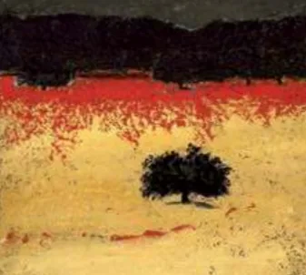

L’autore che maggiormente durante questo anno scolastico mi ha incuriosito è stato Eugenio Montale.
Queste sono tre delle sue poesie che maggiormente mi hanno colpito. Le prime due fanno parte della raccolta Ossi di Seppia, mentre l'ultima appartiene alla raccolta Satura.

Meriggiare pallido e assorto
Meriggiare pallido e assorto presso un rovente muro d’orto, ascoltare tra i pruni e gli sterpi schiocchi di merli, frusci di serpi. Nelle crepe del suolo o su la veccia spiar le file di rosse formiche ch’ora si rompono ed ora s’intrecciano a sommo di minuscole biche. Osservare tra frondi il palpitare lontano di scaglie di mare m entre si levano tremuli scricchi di cicale dai calvi picchi. E andando nel sole che abbaglia sentire con triste meraviglia com’è tutta la vita e il suo travaglio in questo seguitare una muraglia che ha in cima cocci aguzzi di bottiglia
I limoni
Ascoltami, i poeti laureati si muovono soltanto fra le piante dai nomi poco usati: bossi ligustri o acanti. lo, per me, amo le strade che riescono agli erbosi fossi dove in pozzanghere mezzo seccate agguantano i ragazzi qualche sparuta anguilla: le viuzze che seguono i ciglioni, discendono tra i ciuffi delle canne e mettono negli orti, tra gli alberi dei limoni. Meglio se le gazzarre degli uccelli si spengono inghiottite dall'azzurro: più chiaro si ascolta il susurro dei rami amici nell'aria che quasi non si muove, e i sensi di quest'odore che non sa staccarsi da terra e piove in petto una dolcezza inquieta. Qui delle divertite passioni per miracolo tace la guerra, qui tocca anche a noi poveri la nostra parte di ricchezza ed è l'odore dei limoni. Vedi, in questi silenzi in cui le cose s'abbandonano e sembrano vicine a tradire il loro ultimo segreto, talora ci si aspetta di scoprire uno sbaglio di Natura, il punto morto del mondo, l'anello che non tiene, il filo da disbrogliare che finalmente ci metta nel mezzo di una verità. Lo sguardo fruga d'intorno, la mente indaga accorda disunisce nel profumo che dilaga quando il giorno piú languisce. Sono i silenzi in cui si vede in ogni ombra umana che si allontana qualche disturbata Divinità. Ma l'illusione manca e ci riporta il tempo nelle città rurnorose dove l'azzurro si mostra soltanto a pezzi, in alto, tra le cimase. La pioggia stanca la terra, di poi; s'affolta il tedio dell'inverno sulle case, la luce si fa avara - amara l'anima. Quando un giorno da un malchiuso portone tra gli alberi di una corte ci si mostrano i gialli dei limoni; e il gelo dei cuore si sfa, e in petto ci scrosciano le loro canzoni le trombe d'oro della solarità.

Ho sceso, dandoti il braccio, almeno un milione di scale
Ho sceso, dandoti il braccio, almeno un milione di scale e ora che non ci sei è il vuoto ad ogni gradino. Anche così è stato breve il nostro lungo viaggio. Il mio dura tuttora, nè più mi occorrono le coincidenze, le prenotazioni, le trappole, gli scorni di chi crede che la realtà sia quella che si vede. Ho sceso milioni di scale dandoti il braccio non già perché con quattr'occhi forse si vede di più. Con te le ho scese perché sapevo che di noi due le sole vere pupille, sebbene tanto offuscate, erano le tue.

Vita e poetica
Nato a Genova nel 1896, Eugenio Montale è considerato uno dei più importanti poeti italiani del Novecento e nel 1975 ricevette anche il Premio Nobel per la Letteratura. Durante la sua vita lavorò come giornalista, critico letterario e direttore del Gabinetto Vieusseux di Firenze, incarico dal quale venne allontanato perché non volle iscriversi al Partito Fascista.
La sua esperienza personale, segnata dalle guerre, dalla crisi dei valori e da un forte senso di inquietudine, influenzò profondamente la sua poesia. Montale appartiene alla corrente dell’Ermetismo, anche se sviluppò uno stile molto personale: nelle sue opere utilizza immagini concrete della natura, oggetti quotidiani e paesaggi aridi per rappresentare il disagio interiore dell’uomo moderno.
La sua poetica si basa sull’idea del “male di vivere”, cioè la sofferenza e il senso di smarrimento che caratterizzano l’esistenza umana. Spesso nelle sue poesie emerge la ricerca di un “varco”, cioè un momento o un segno capace di dare un senso più profondo alla realtà. Il linguaggio di Montale è ricco di simboli e immagini evocative, ma allo stesso tempo riesce a trasmettere emozioni molto intense e sincere.